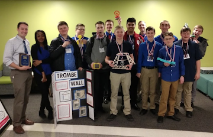
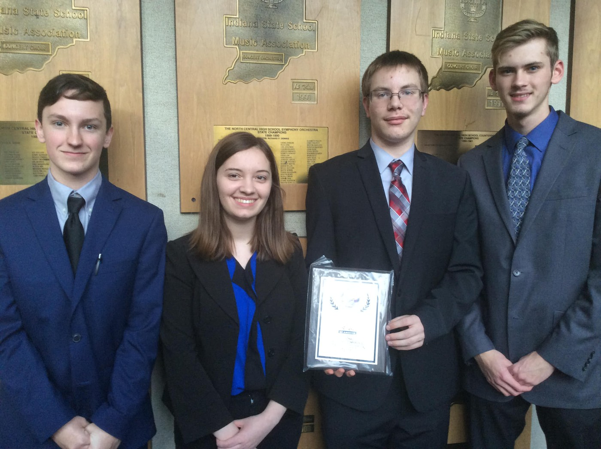
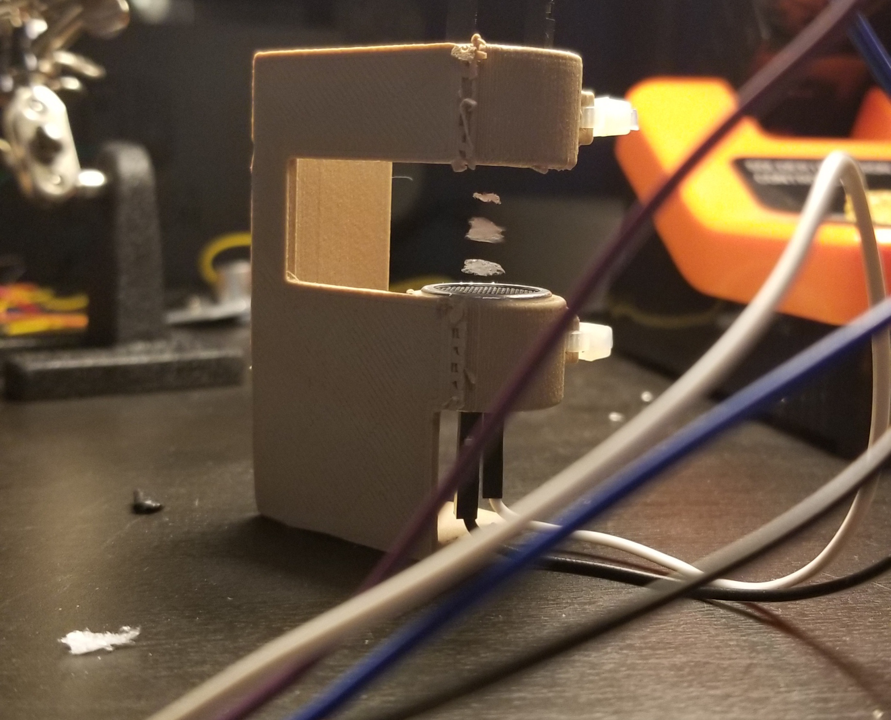

My name is Kaleb Harris and I am currently a Senior at Franklin Central High School. I have lived in Indiana for my entire life, and plan to stay here for some time. I have been interested in technology and computer science since early on in my life, and am currently participating in the NexTech Catapult Program where I am learning more in depth web development skills and also am exploring the tech scene in Indianapolis. I am involved in multiple clubs/teams and have a few good hobbies. You can learn more about these below!
I have been involved in robotics since my 7th grade year in 2014. Our team in 2014 was a first year team, and we placed 1st in the Indianapolis VEX IQ Competition, qualifying our team for the 2014-15 VEX World Championship. During the World Championship we ended up making into an alliance for Finals, where our alliance then placed 5th. Since then I have remained heavily involved, continuing on into high school. I am currently a Head Coach for our high school team and enjoy volunteering at our middle school to help teach the basics of robotics and run events.
A new club that I just recently joined is the Technology Student Association, or TSA. In TSA we work on engineering or technology related projects throughout the year to then present in State and National level competitions. During the 2018-19 school year I competed in three events at the Indiana State Competition, and qualified for nationals in two of the three events. These events were Debating Technological Issues (1st place), Video Production (2nd place), and Essays on Technology (3rd place). Click here to jump to all the videos I have been involved in!
Business Professionals of America, or BPA, is a club similar in structure to TSA, however with a business focus on our events. I have competed in a Video Production team and in Spreadsheet Management(Microsoft Excel) for two years. Throughout the years our Video Production team placed 2nd and 1st at our regional conference. Click here to jump to all the videos I have been involved in!
I enjoy working with electronics to make projects using things like Arduinos and other components. I also enjoy working with computer hardware, building new PCs and upgrading older ones. One project that I have worked on is an ultrasonic levitation device, which levitates small foam pieces between two ultrasonic transducers. I have also built my own gaming computer, and helped friends with building/buying their own. Pictured below is my ultrasonic levitator project.
I have been involved in Video Production teams for two years through BPA and TSA. I have worked primarily on filming and post-production for these videos. I also have created a few videos for our robotics team, for recruitment and for our website.